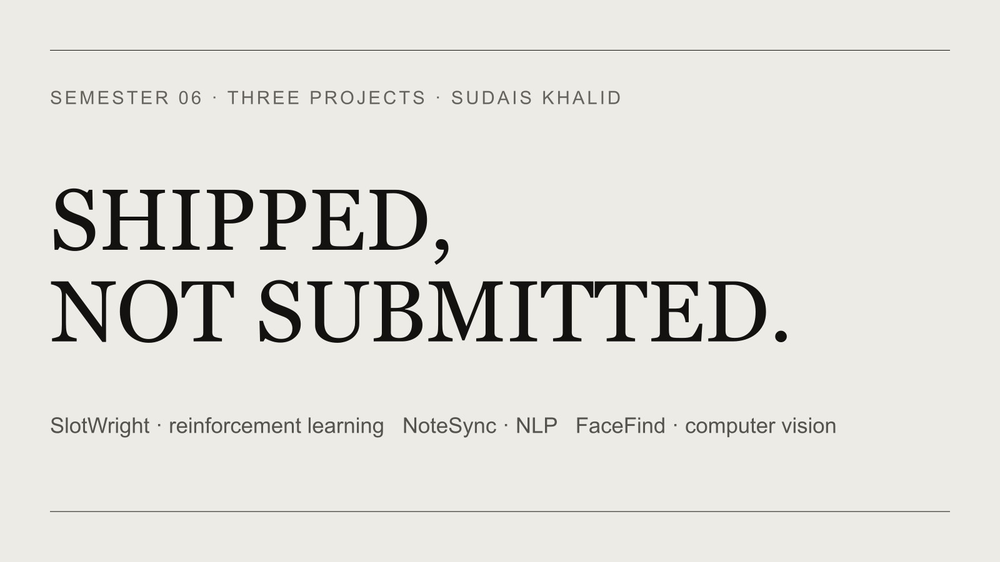

Shipped, Not Submitted: Three AI Projects from Semester Six

Semester six is over, and I want to write down what it produced while the lessons are still fresh. Three projects, three different corners of AI: a reinforcement learning agent, a from-scratch NLP pipeline, and a computer vision system that is running live on Azure right now. Each one started with a real annoyance, not an assignment brief, and each one had to survive contact with production before I called it done.
I have written before about why students should stop recycling to-do apps and solve problems they have actually felt. This semester was me holding myself to that standard. Here is how it went.
SlotWright: teaching an RL agent to schedule university events
The problem is one every student recognizes. Universities schedule events by hand, and it shows. Venues get double-booked. Events land in the middle of finals week. A society books a seminar hall at 2 PM and wonders why nobody came, when half the target students had a lab at that exact hour.
Scheduling under competing constraints is exactly the shape of problem reinforcement learning is built for, so I built SlotWright. The environment runs on Gymnasium, modeled as a Markov Decision Process: for each incoming event, the agent's action is a triple of day, time slot, and venue. The state captures the current calendar, venue availability, and the timetables of the target student group.
The part I find most interesting is the dual constraint check. A slot is only considered valid if two independent conditions hold at once: the venue must be free, and the common free time across the target students' timetables must be high. Either one alone is easy. Enforcing both simultaneously is where manual scheduling falls apart, and it is exactly what the agent learns to navigate.
The reward function encodes everything a good human scheduler intuitively knows. Placements during exam weeks are penalized. Overlaps with lectures are penalized. Booking a 300-seat auditorium for a 30-person workshop is penalized. Slots where the target audience is actually free, in a venue that fits the expected crowd, are rewarded. Training runs over repeated episodes until the learned policy consistently beats two baselines: a random scheduler and a rule-based one. If your RL agent cannot beat a handful of if-statements, you do not have an RL project, you have a very slow random number generator. SlotWright beats both.
NoteSync: an NLP pipeline with nothing hidden inside an API call
NoteSync records lectures and turns them into annotated study notes. That description could apply to a dozen apps, so here is what makes ours different: the entire NLP stack is built from scratch in Node.js. No Python microservices behind the scenes, and no quietly outsourcing all the understanding to an LLM.
The pipeline tokenizes the transcript, POS-tags it, scores sentences with TF-IDF to find what matters, extracts named entities with exact character offsets, detects definitions through pattern matching, and computes Flesch-Kincaid readability with a formula we wrote by hand. Gemini exists in the system, but it is optional and deliberately caged: it can polish wording, and that is all. It cannot replace or override any analytical result. If the pipeline says a sentence is important, that judgment came from math we can read and test, not from a black box.
The hardest engineering was Urdu support, and it taught me a lesson about silent failure. The stock TF-IDF tokenizer was dropping all Arabic script without a single error or warning. Urdu text went in, nothing came out, and every downstream metric just quietly pretended the Urdu half of a bilingual lecture did not exist. We fixed it with a bilingual regex that matches both Latin and Arabic script runs. Then came the subtle one: the Urdu full stop is its own character, U+06D4, and sentence splitting on it would have shifted every character position. We handled it with a same-length character copy, so every highlight in the notes still maps to the exact right offset in the raw transcript.
The final tally: 81 automated tests, Docker, and a GitHub Actions CI/CD pipeline. Built over one semester with Muhammad Farooq Khan, who deserves half of every good decision in that codebase.
FaceFind: find yourself in 400 photos without scrolling
This one started with twenty wasted minutes. After an event, I scrolled through 400 photos in a shared album just to find the 8 pictures I appeared in. Everyone does this after every event, and everyone hates it. So I built something about it.
FaceFind lets you scan your face once through your webcam, then retrieves every photo and video you appear in from a Google Drive album. Nobody else's photos. Just yours.
The retrieval engine is the part I am most proud of. ArcFace ResNet-100, running locally through ONNX Runtime, converts a face into a 512-dimensional embedding vector. At enrollment we capture 7 frames and average their embeddings, which gives a far more stable probe than any single frame. That probe is searched against a FAISS index built from every face detected in the album, and results come back in milliseconds.
Privacy was a design constraint from day one, not a paragraph added at the end. Your face is never stored as an image. The system keeps only an AES-256-GCM encrypted embedding, scoped uniquely to you and that specific event. There is nothing to leak that could reconstruct your face, and nothing that follows you across events.
It is deployed live on Azure with 3,252 faces indexed across 299 photos, behind a full Docker and GitHub Actions CI/CD pipeline. It broke in production twice. We shipped anyway, fixed it in the open, and both failures made the system better than any amount of pre-launch polishing would have.
A semester project you demo once is homework. A semester project that survives strangers using it is a product.
The thread running through all three
Every one of these projects was deployed with vibe-ship, my open source Claude Code plugin that generates the entire production setup: Dockerfiles, CI/CD workflows, and security auditing in one pass. Having a tool you built yourself, that knows exactly how you like to ship, is genuinely a superpower. It turned the worst part of every project into the fastest part, and it saved hours on each build.
All three projects are open source and open for contributions. If you work on reinforcement learning, NLP, computer vision, vector search, or privacy systems, there is a place for you in these repos:
SlotWright on GitHub → NoteSync on GitHub → FaceFind on GitHub →And if you are a student staring down your own semester projects, wondering whether to play it safe: pick the problem that annoys you personally, build it like someone will actually use it, and ship it before it feels ready. That discomfort is the entire education. If you want to talk through an idea, reach out. My door stays open.